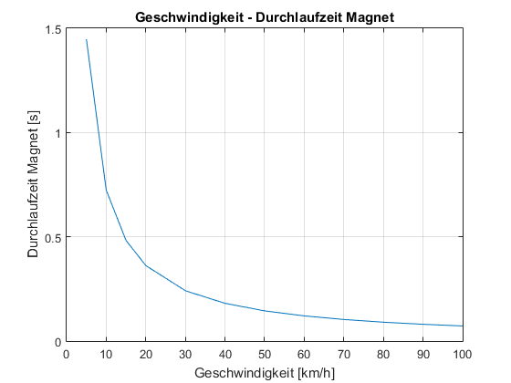
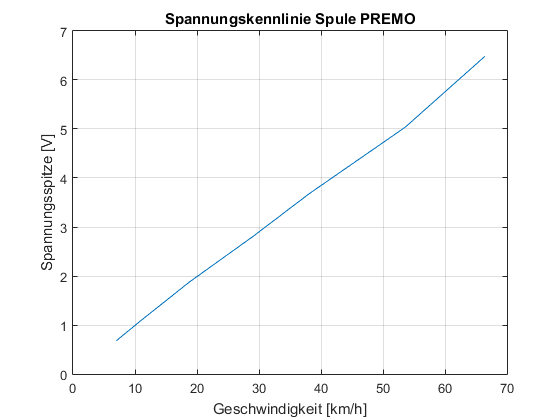
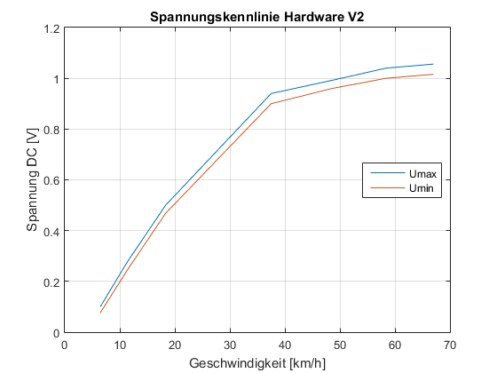
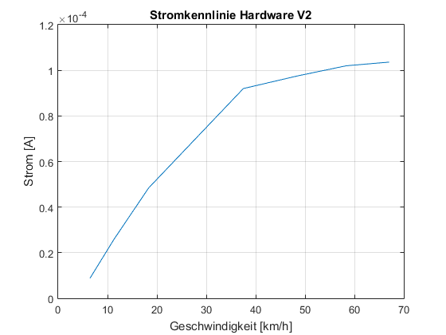
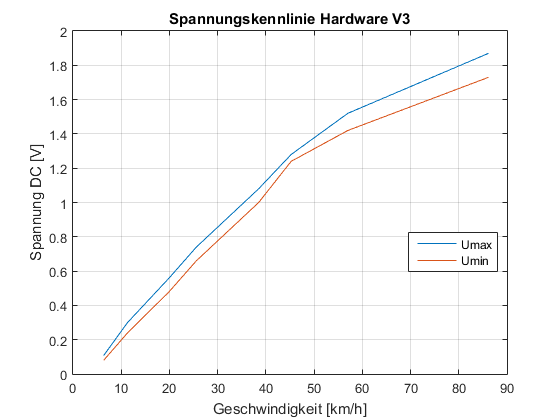
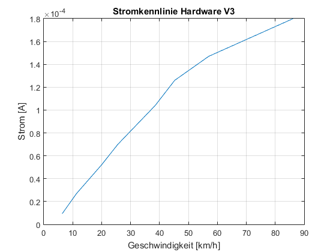
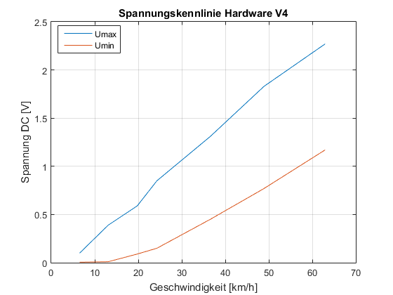
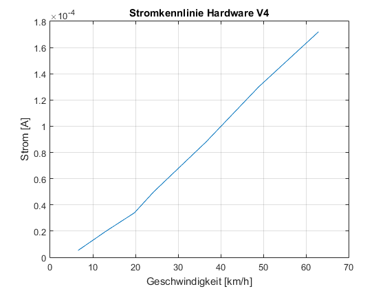

Projekt Arbeit HS15 ZHAW
Messprotokoll Hardware
@Daniel Studer, Roman Schneider
18.12.2015
Contents
Geschwindigkeit - Durchlaufzeit Magnet
v = [5 10 15 20 30 40 50 60 70 80 90 100];
r = 0.320;
s = 2*pi*r;
delta_t = s./(v/3.6);
figure(1); plot(v,delta_t)
grid on
title('Geschwindigkeit - Durchlaufzeit Magnet')
xlabel('Geschwindigkeit [km/h]')
ylabel('Durchlaufzeit Magnet [s]')

Spannungskennlinie der Spule
Spulen-Typ: PREMO 3015N-0238J 32/06
Versuch-Nr.: 1
t1 = [1.033 0.667 0.385 0.250 0.190 0.135 0.109];
u1 = [0.680 1.080 1.880 2.800 3.680 5.040 6.480];
v1 = s./t1*3.6;
figure(2); plot(v1,u1)
grid on
title('Spannungskennlinie Spule PREMO')
xlabel('Geschwindigkeit [km/h]')
ylabel('Spannungsspitze [V]')

Spannungskennlinie Hardware
Versuchs-Nr.: 2
Komponente: - Diodenbrücke - 2 Begrenzungs-Dioden
- Kondensator - Lastwiderstand 10kOhm
t2 = [1.122 0.638 0.395 0.193 0.149 0.124 0.108];
u2_max = [0.100 0.276 0.500 0.940 0.992 1.040 1.056];
u2_min = [0.076 0.244 0.468 0.900 0.960 1.000 1.016];
i2_mittel = ((u2_max + u2_min)/2)/1e4;
v2 = s./t2*3.6;
figure(3); plot(v2,u2_max,v2,u2_min)
grid on
title('Spannungskennlinie Hardware V2')
xlabel('Geschwindigkeit [km/h]')
ylabel('Spannung DC [V]')
legend('Umax','Umin','Location','best')
figure(4); plot(v2,i2_mittel)
grid on
title('Stromkennlinie Hardware V2')
xlabel('Geschwindigkeit [km/h]')
ylabel('Strom [A]')
 
Spannungskennlinie Hardware
Versuchs-Nr.: 3
Komponente: - Diodenbrücke - 3 Begrenzungs-Dioden
- Kondensator - Lastwiderstand 10kOhm
t3 = [1.137 0.640 0.363 0.283 0.188 0.160 0.127 0.084];
u3_max = [0.108 0.300 0.560 0.740 1.080 1.280 1.520 1.870];
u3_min = [0.080 0.240 0.480 0.660 1.000 1.240 1.420 1.730];
i3_mittel = ((u3_max + u3_min)/2)/1e4;
v3 = s./t3*3.6;
figure(5); plot(v3,u3_max,v3,u3_min)
grid on
title('Spannungskennlinie Hardware V3')
xlabel('Geschwindigkeit [km/h]')
ylabel('Spannung DC [V]')
legend('Umax','Umin','Location','best')
figure(6); plot(v3,i3_mittel)
grid on
title('Stromkennlinie Hardware V3')
xlabel('Geschwindigkeit [km/h]')
ylabel('Strom [A]')
 
Spannungskennlinie Hardware
Versuchs-Nr.: 4
Komponente: - Villardschaltung(2 Stufen)
- Lastwiderstand 10kOhm
t4 = [1.108 0.552 0.366 0.298 0.198 0.148 0.115];
u4_max = [0.100 0.390 0.590 0.850 1.310 1.830 2.270];
u4_min = [0.005 0.010 0.090 0.150 0.450 0.770 1.170];
i4_mittel = ((u4_max + u4_min)/2)/1e4;
v4 = s./t4*3.6;
figure(7); plot(v4,u4_max,v4,u4_min)
grid on
title('Spannungskennlinie Hardware V4')
xlabel('Geschwindigkeit [km/h]')
ylabel('Spannung DC [V]')
legend('Umax','Umin','Location','best')
figure(8); plot(v4,i4_mittel)
grid on
title('Stromkennlinie Hardware V4')
xlabel('Geschwindigkeit [km/h]')
ylabel('Strom [A]')
 